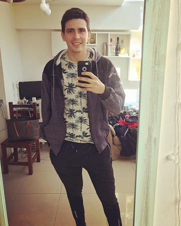

Paolo Carreño
Tengo 29 años, hijo de argentinos, nacido en Guatemala,
Educacion:
- Secundario Completo. (Guatemala)
2009 Bachillerato en Ciencias y Letras.
- 1 año en administración de empresas
cursos realizados:
- reparacion de celulares
- reparacion e instalacion de aires acondicionados
- preparacion fisica y personal trainer
Experiencia Laboral:
- Personal trainer (entrenamiento personalizado) 2015-2019
- Escuelita de futbol “La Cabriada”, abril 2017 – 2019
- Restaurante “EL PALACIO DE LA PAPA FRITA” Cajero, encargado Abril 2014 – junio 2016
- Restaurante “EL ÑANDU”, Encargado principal. junio 2013 a Abril 2014
- café “El Faro” Mozo. 2012 al 2013
Skills
- capacidad de razonamiento
- capaz de aprender y accionar en algo nuevo
- hablidades sociales para mantener buenas relaciones
- hago ricos cafecitos batidos

Hobbies:
- Jugar al fubtol
- Meditacion y aprendizaje del crecimiento espiritual y evolucion
- Fabricar objetos en madera hierro o concreto
- Jugar videojuegos
Por qué y para que estudio esto?
Porque siempre me llamo la atención la programacion, pero siempre tenia la idea que
para programar tenias que saber muchisima matematica, en este ultimo tiempo, investigando me di
cuenta que no, asi que me empece a meterme y ver videos, y me gustó.
Arranco por aca porque segun la información que encontre, este seria el puntapie para llegar
luego a aprender arduino y inteligencia artificial.
Para poder desarrollar sistemas que ayuden a la gente, y para ganar mas dinero y llevar una mejor vida.